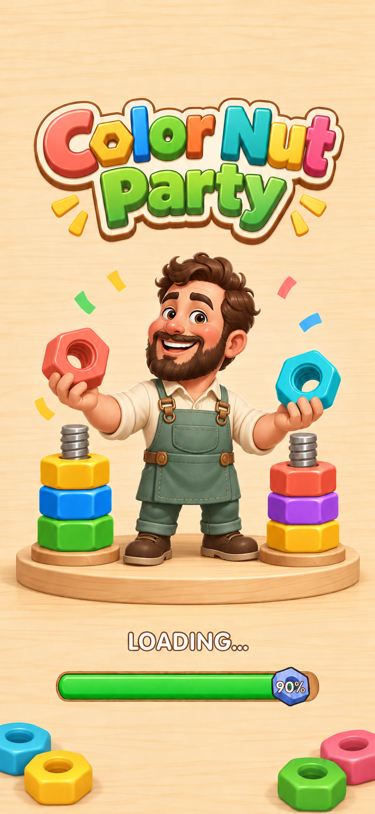
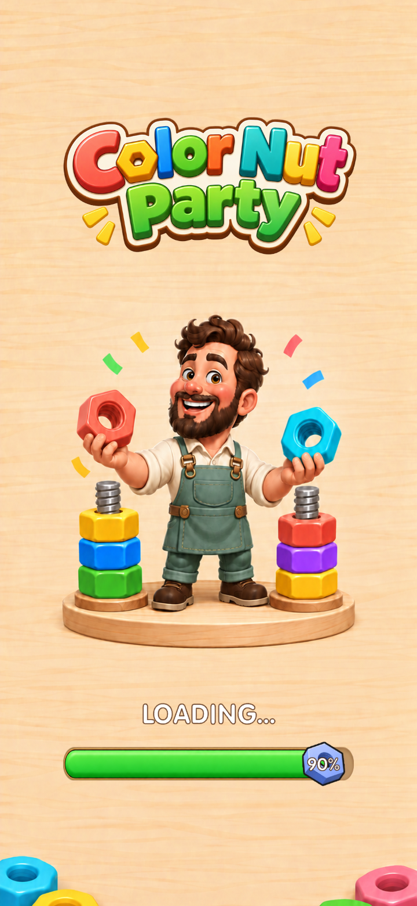

① 原游戏界面
原游戏基准截图
② 用户确认的 AI 效果图
设计预览，非运行截图
③ 实际场景 · Unity Play Mode
720 × 1560，原动态加载 UI，90% 验收状态
原游戏 / 已确认 AI 效果图 / 替换后 Unity 运行截图。右图为真实启动场景中的同一个 Loading，在验收时重开至 90%；进度文字和填充由原有组件驱动。


自动启动过程截图 · 720 × 1280 运行截图 · 长屏验收报告 · 宽屏验收报告 · 素材来源与 ImageGen 提示词
未连接 Android 设备；Unity 截图不等于真机截图。安装包信息另见 APK 构建报告。